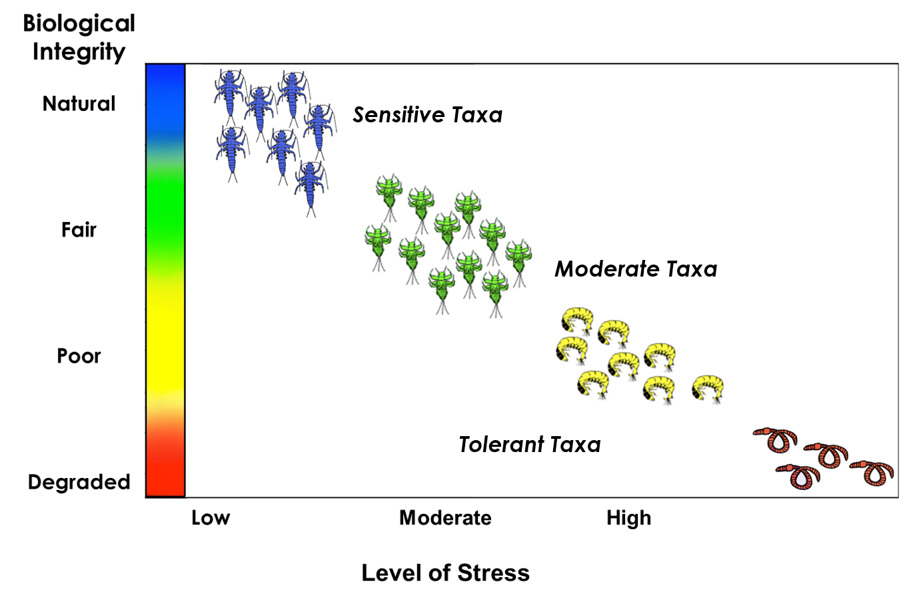

Clean Water Act Implementation and Needs for Continuing Success in Connecticut
Informing High Water Quality Protection
Mary Becker and Christopher Bellucci
Monitoring and Assessment Program, Bureau of Water Protection and Land Reuse
Northeast Aquatic Biologist Conference - March 5, 2021

Willimantic River, Stafford CT 1960s (left) and 2000s (right)

Sages Ravine Brook, Salisbury CT


